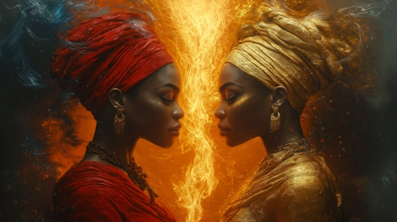

The myth of Twin Flames tells of Oba and Oshun, both wives of Shango — bound in rivalry, love, and pain. Oba, the dutiful and royal wife, offers her whole self to please Shango — even her flesh. Oshun, the goddess of beauty and water, wins his heart with joy, wit, and seductive grace.
In one mythic tale, Oshun tricks Oba into cutting off her ear to win Shango’s favor. The act fails, and Oba flees in shame, her sorrow turning into storm and shadow. From then on, she becomes a river goddess, filled with wrath.
This song is not merely about love lost — it's about female power, rivalry, and betrayal, and how even gods are shaped by the wounds of women. Together, Oba and Oshun became part of Shango’s myth, but their voices, often silenced in conquest tales, still burn with truth.
Twin Flames
I gave him blood, I gave him name,
My heart was oath, not pride or fame.
He crowned my love with scarlet flame,
But now I burn alone in shame.
I was the queen, I bore his fate—
And still he turned with lust and hate.
Two flames in the same sky,
One weeps, the other lies.
We danced, we fought, we fell apart—
One took his bed, one broke her heart.
I brought him charm, I brought him cheer,
He smiled where once he bared the spear.
Oba, you wept—while I beguiled,
He drank my song, and praised my wiles.
The honey’s sweet when blood runs dry—
A crown is nothing if he won’t cry.
Two flames in the same sky,
One weeps, the other lies.
We danced, we fought, we fell apart—
One took his bed, one broke her heart.
Oba: I gave my ear, my flesh, my vow...
Oshun: I gave him joy, I showed him how...
Oba: You tricked my soul, you cursed my pride—
Oshun: You were the wife. I was the bride.
He burned us both with equal spark—
His fire gave us light and dark.
Two flames in the same sky,
One weeps, the other lies.
We danced, we fought, we fell apart—
One took his bed, one broke her heart.
So let the fire choose its name,
Love without mercy ends the same.
We are the embers, we are the scream,
Of women scorned in thunder's dream.
Oshun and Oba, carved in flame—
Two halves of sorrow, bound in name.